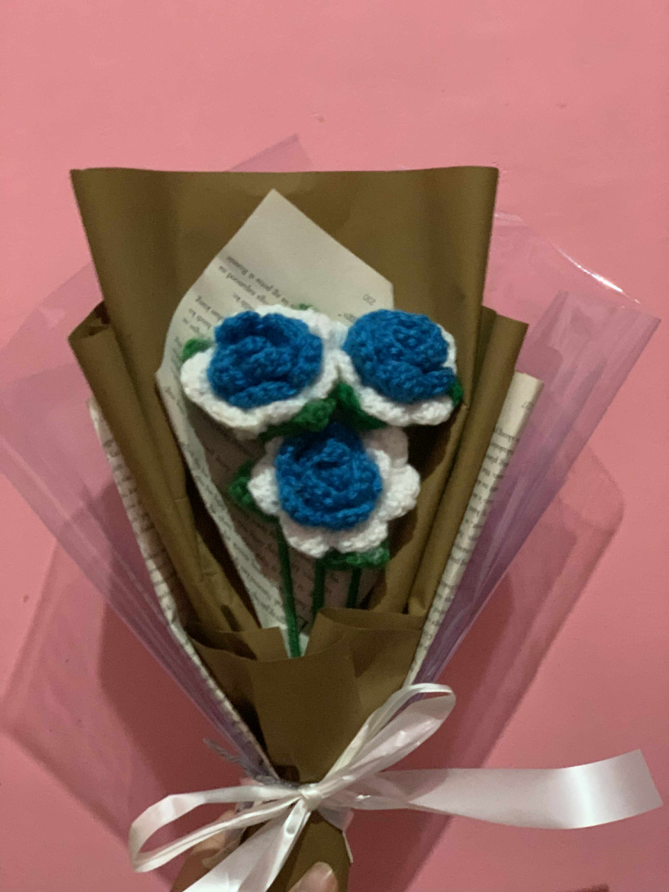

Every floral piece I create is rooted in the joy of handmade detail. From yarn bouquets to ribbon roses, each item reflects care, creativity, and a love for color.Whether it’s a crocheted bouquet meant to brighten someone’s day or a ribbon arrangement crafted for a special moment, my work reflects a deep love for tactile artistry. I choose materials not just for their texture, but for the stories they help tell—stories of warmth, celebration, and quiet elegance. Each creation is more than decoration; it’s a gesture of thoughtfulness. I design with intention, infusing every piece with personality and purpose. From custom wrapping to curated palettes, I tailor each item to reflect the unique spirit of the person or occasion it’s meant for.

Mini bouquet keychains – soft, colorful, and gift-ready.

Blue & white crocheted bouquet – wrapped with elegance.